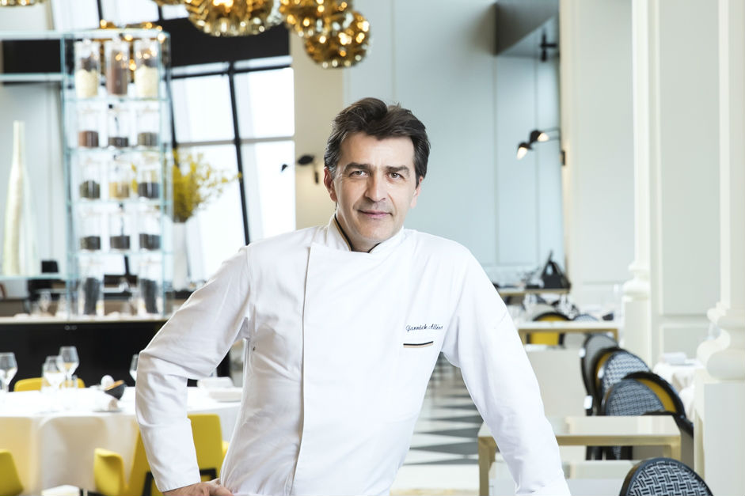

즐거운 식사는 달콤한 디저트로 완벽하게 마무리
호텔 ‘시그니엘 서울’ 내 모든 식음료를 총괄하는 야닐 알레노 셰프.
2019년 기준 8개의 미쉐린 스타를 얻고 전 세계 유일의 3스타 레스토랑 2곳을 등재시킨
그의 명성과 실력이 고스란히 녹아있는 베이커리입니다.
프랑스에서 가장 저명하고, 존경받는 셰프들 중 한 명인 그는
프랑스 현지의 트렌드를 한국의 제철 식재료에 접목시켜 이국적이고 독특한 음식들을 선보이고 있습니다.
언제나 지역의 식재료에 주목한 음식들에는 상생과 공생이라는 그의 가치 또한 녹아들어있습니다.